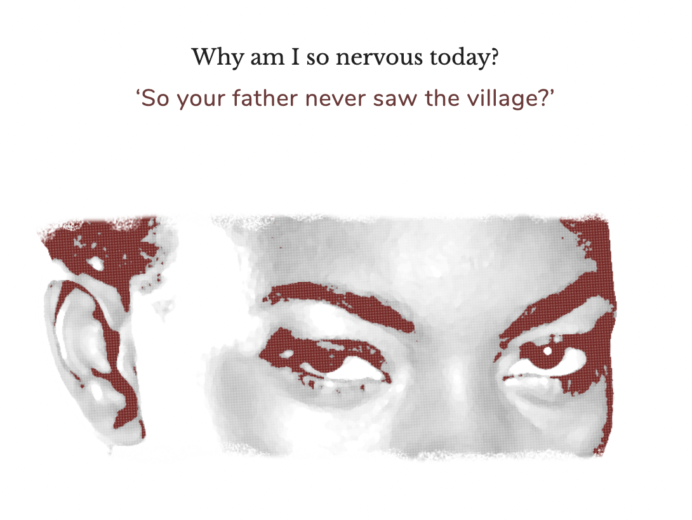

The good people
is a text-based game, and the player controls the narrator's actions by clicking on what decision they want to make. The design is relatively simple, mostly just text and some images. Certain animations are placed on the text to highlight moments that are important to the narrative.
The two characters that the player controls are Daniel and Alice. For the majority of the game the player controls Daniel's decisions, but at the very end when they are surrounded by the good people, the player controls Alice's decisions. As the game progresses, the player can read about the many different monuments that are present in the abandoned village and gain insight into how the landscape affects Daniel's character. You also interact a lot with Alice. It is very evident that Daniel and Alice are in a romantic relationship, but it is somewhat estranged.

The main way the player is challenged is through the sheer amount of reading they have to do. The game expects the player to pay full attention to what they are reading so that they can comprehend the narrative that is being presented. Since the gameplay is very minimalist in nature, there isn't a whole lot of interracting with objects in the game. You can explore certain ares, talk with Alice, and at the end of the game when you play as her, you make a cross with a stick if you choose to save Daniel. The
The good people
makes commentary on how the desecration of indigenous cultures affects future generations. The good people are a superstition that the dead people will come and find you to take you as one of them. Daniel's grandfather was forced to leave his village when it was flooded. When Daniel and Alice visit the village after the resevoir dries up, the good people and a creature whose name you never learn come and haunt them, showing that Daniel is still living with the repercussions of the past wrongs done to his people.
This game definitely has an illusion of choice
where it seems like you are able to make distinct choices that affect the narrative, but in reality the player's decisions really don't affect anything. The only decision in the game that actually matters is in the end when you're playing as Alice, you can either save Daniel from the good people or leave him behind. This means that the game only has two endings.

If I were the developers of this game, I would try and make it so that the player's choices actually carry weight in the story. For instance, in the game you are attacked by the creature and the good people. You have the option to try and run away from them and leave Alice behind or to try and save her, but both decisions have the exact same outcome. I would at least make it so that big decisions like these actually have different outcomes. This way the game would have at least more than two endings.